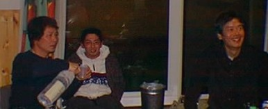
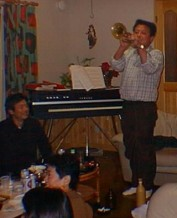
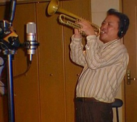
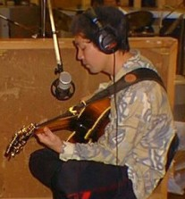
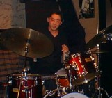
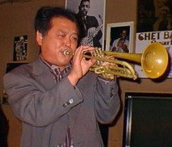
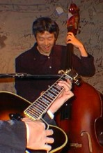
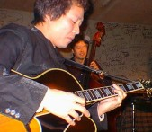
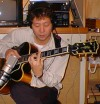

2000.01.09–11 河内スタヂオ録音
Sweet & Lovely
熱田修二 & 宮之上貴昭熱田修二 (tp) / 宮之上貴昭 (g) / 山口雄三 (b) / 高橋信之介 (ds)
「スタジオの静けさは演奏の中にも聴き取れる。」スイングジャーナル 10月号 録音評
About the Album
作品紹介
「Sweet&Lovely」
Syuji Atuta meet
Yosiaki Miyanoue
Syuji Atuta meet
Yosiaki Miyanoue
熱田修二（トランペット）
宮之上貴昭（ギター）
山口雄三（ベース）
高橋信之介（ドラムス）
2000年１月９～１１日
河内スタヂオ録音
発売元: ATUTA Planning ￥３，０００
（CD代、税込み）
SOLD OUT
・Taking a chance on love ・Fascibathing rhythm ・Sweet & Lovely ・One note Samba ・Here’s that rainy day
♪East to West （宮之上貴昭オリジナル曲 268kb） ・Georgis ・I found a new baby ・Round about midnight ・Cherokee
「Sweet&Lovely」スイングジャーナル10月号 録音評で 今月のベスト・アルバムに選ばれました。
都会にあるスタジオ 録音の泣き所は遮断の 困雑な外部騒音である。 本作は秋田にあるプラ イベート・スタジオで 収録された。スタジオ の静けさは演奏の中に も聴き取れる。いささ かも濁りのない音場の 響きのなか、ギター・ トリオとtpのユニット がソロと合奏にわたり サロン的にスタンダー ド曲を展開する。マイ ク・セッティングが完 璧に近く、ギターの弦 が揺れ動く様やtp開口 部からほとばしる音の スピード感に加え、ベ ースの低域感やドラムスの強弱感など、聴き 応えがあった。（長澤）
（スイングジャーナル10月号 録音評より）
本作品はジャズギター界の雄、宮之上責昭との共作である。
そもそも熱田と宮之上の出会いは、1983年、熱田の初リーダ一アルバム「アイ・リメンバー・クリフォード」に営之上が参加したのがきっかけ。
その後、毎年のように宮之上率いる「スモーキン」を島根こ招いてコンサートを開き、自ら客演して宮之上との交友を深めていった。
「熱田さんの歌心溢れるプレイが大好き」と宮之上は語る。2人のインタープレイを前面に出すために、今回のレコーディングには敢えてピアノを排した。また、宮之上は、曲によってガットギターに持ち換え、効果的なサウンド作りを試みている。
強力なリズムセッションも忘れてはならない。ベーシストは、長年、宮之上と活動を共にしてきた山口雄三。決して派手ではないが趣味の良いランニングとソロは、同業のベーシストからも一目置かれている存在。そしてドラマーには、注目すべき新鋭、高橋信之介。繊細にして的確なビ－トを刻み、弱冠21才とは思えない程、完成されている。
熱田の、人間味溢れる表情豊かなソロ。そして、宮之上の華麗なテクニックと随所に光るバッキング。この作品は、実に見事に2人の個性を引き出した、紛れもない「傑作」だ。 選曲もバラエティーに富んでいて、思わず最後まで一気に聴き入ってしまった。しかし、また最初から聴き返したくなるのだ。今度はウイスキーを片手に。
ジャズ評論家 佐藤 博 （ライナーノーツより）
Recording Report
レコーディングレポート
あの名トランペット奏者熱田修二と、河内スタヂオおなじみの宮之上貴昭の共作レコーディング決定！
メンパーは２人の他に、山口雄三(b)、高橋信之介(ds)。敢えてピアノを入れず、ギタートリオをバックに心ゆくまで熱田のプレイが堪能出来る事と、宮之上のギターの絡みを狙った作品に仕上がる予定。レコーディングは１月９日～１4日、秋田の河内スタヂオで行われた。
レコーディングの様子1/9～1/14
2000年 １月９日


９日夕刻、無事河内スタヂオに到着、追っかけ隊４人を含む８名でスタジオにお邪魔
し、先ずは とりあえず 美味しい日本海の幸に舌鼓、リラックスして セットアッ プ。
明日からのレコーディングに備えます。トランペットの熱田修二は酒の席で そ
の華麗なテクニックを披露し、その場を大いに盛り上げると同時に、明日からのレ
コーディングの並々ならぬ意欲がうかがえた。
とても楽しみなレコーディングになりそうです。大いに期待してください。
このレコーディングのために、ゴキゲンなブルース曲を１曲書き下しました。楽しみ
にしてください。 一週間ここにいますので、どうぞこのホームページにアクセスし
てくださいね。
心からお待ちしております。(Miya)
1月１０日
レコーディング


朝８時起床、外の寒さはこの河内スタヂオにいるかぎり感じることはない。
秋田の片田舎、大潟村にあって、ここは別世界だ。さしずめニューヨークのビレッジにある高級スタジオにいる雰囲気と何ら変わりない。眠い目をこすって、早速レコーディングの準備、思うように指が動かないのはあたりまえ、リハビリならぬ自己トレーニングから開始、ぼちぼち指が動くようになったところで、先ずはとりあえず、軽い曲、But not for me からスタート。起き抜けのボーとした頭には、この曲はベストマッチだった。リラックスムードで超激マジSwing！みたいな？ お～っとっと、いけねえいけねえ。
録音曲は Round about midnight,そして Cherokee。 体が目覚めるにつれハードにSwingし、エキサイティングなプレーを収録する事が出来ました。前回のアルバムはオーバーダビング一切無しのソロアルバムだったので、今回はトランペットとギターという編成のサウンドを考慮して、ガットギターをかぶせたり、リズムギターを加えたりと、小編成ながらとても幅の広い音づくりを狙った作品にしようと思っています。１月１０日午後９時現在、収録曲は４曲、順調な進行状況で、明日からのレコーディングも楽しみです。 でもね、家から郵送したガットギターの、厳重な梱包を開ける時、おもいっきりガムテープをはがしたら、左手がぎっくり腰ならぬ、ぎっくり手首になってしまいました。でもでも、心配するほどは大げさなものではなく、明日朝 大潟村の温泉につかれば治ること間違いなし！ 引き続き楽しみに、期待して待ってて下さいね。ところでせっかく僕が久しぶりにダイレクトにメッセージを送ってるのに返事がないのはなぜ？ナゼ？ NAZE？(Miya)
1月１１日
夕方までレコ－ディング、夜は The Cat Walk でライブ




今日、CAT WALKでのライブに行って来ました。
秋田での録音中と言うことなので、緊張感のある背筋を伸ばして聴くライブと思いきや、
なんとびっくりリラックス、まさにリラックスの楽しい演奏でした。
特に初めて聞く熱田さんのメリハリのあるスイング、そしてペットをあんなに小さな音で鳴ら
せるものかと変な感心をしてしまいました。おまけにあのトーク、ペットと同じであったかで
した。
田沢湖での去年のライブでも感じたのですが、スモーキンの皆さん、演奏してるときの表情が
とてもすばらしい。見てるこちらまで楽しくなってしまいます。
JAZZはやっぱりライブですね。
今日は好きなＬＡコネクションからの曲もあり満足。満足。
ＣＤの発売が待ち遠しくなりました。（Tomiokaさん投稿）
1月１2日
レコーディング
-返事がないのはなぜ？ナゼ？ NAZE？- が効を奏して１晩に５件も届きました。ありがとう。
こちらも最高の環境と美味しいお酒や海の幸を武器に、レコーディングは極めて順調に進行して、Here That Rainy Day/ Gorgies/ Bluse in F/ One Note Samba/ Sweet & Lovely/ I Found A New Baby/ Facinating Rhythm/ Cherokee/
の８曲を収録完了。明日はマスタリングと編集を行います。応援してくれた皆さん有り難う！
（Miya）
1月１3日
マスタリング
スタジオ調整室にてマスタリングの宮之上氏
２階の台所で寿司を握る熱田氏
昨日、音撮りが終わった為、宮之上さん以外のメンバーはすっかりリラックス。 熱田さんは 早起きをして 市場に行き新鮮な魚を調達。ミュージシャン料理人か はたまた 料理人ミュージシャンかと思わせる腕を披露してくださいました。 美味しかった～～～！
肝心のマスタリングがどうか、 って？ 詳しい話しは、宮さんに語ってもらいましょう。（Ｋ）
毎日メッセージをありがとう。感謝しています。その後の経過をお知らせします。レコーディング終了後、マスタリングと言って、編集作業に取りかかりました。これが大変なんだ。例えばギターやトランペットの音色をチェックしたりと、気になる事ばかり。気にし出すと、１曲マスタリングするのに２時間もかかってしまう事もあった。こんな時リスナーはいいなー、とつくづく思う。
ただ 「おっ、いいね」だもんね（月刊スモーキン１月号と比較してください。）
それともう一つ気にかかるのは、マスタリングを僕にまかせて、我々のために「すしを握る・・」と言って２階で腕によりをかけている熱田修二のその腕前。とっても気になったのだけど。味はGood 本職の寿司職人に劣るとも勝らない、いや勝るとも劣らなぬその味に感服。
かくして、全10曲、無事録り終えました。その中で一曲さわりだけ、僕の作曲のBluesをお聴かせしますね。 この曲、タイトル未定ですから、僕と熱田修二このカラミを連想させるゴキゲンなタイトルがあったらお寄せ下さい。（Miya)
１１月１４日
宮之上貴昭＆スモーキン Live at Fukusima マスタリング
宮之上貴昭ソロギター レコーディング

連日にも及ぶハードなリハーサル、そしてレコーディングが続き６日目を迎えると、さすがにメンバー一同、披露の色は隠せない。しかし、この「合宿」レコーディング。合宿と言っても、それこそ「気心」知れた「河内スタヂオ」。
演奏に煮詰まれば、スタジオでゴロっと横になり、ウィスキーを口に含む熱田修二の姿がそこにあり、ソファーで寝そべる山口雄三もいる・と思えば。さっきのティクの、うまくいかなかったパートをひたすら練習する新鋭、高橋信之介の姿がある。世界中探しても、こんなスタジオあるのだろうか？
「お疲れさまでした」。秋田、大潟村を後にした僕を除くメンバー一行は１１：０９発の列車で無事帰京した。その顔は「疲労感」というよりも、むしろ「充実感」が溢れていた。さて僕の仕事はまだ残っている。例の福島ライブをC.D.に編集する作業と、３月にアメリカのミュージシャン１１名と私が加わった「世界ジャズギタリスト紳士録」（仮称）のソロレコーディングが、もう１日あるのだ。
もう、福島ライブの演奏は言うこと無し！編集に時間をカナリ要したものの、スムーズに終了。ソロレコーディングは「ミー、マイセルフ、アンド、アイ」で最も好評を博した「オレオ」を再び収録。無事録り終えました。
さて皆さん、想像するのが難しいほど、リラックスできる、この河内スタヂオでの録音聴いてみたいでしょう？！ 春まで待っててくださいね。（Miya)
このレコーディング合宿（？）生活で一番の早起きは 熱田さん 。
ふだん５時に起きる熱田さんはもう８時には身支度済ませ 温泉 朝風呂に行きます。（睡眠時間足りてるのかしらと心配してると、いつでもどこでも コテッ と仮眠してました。） 次に起きてくるのが 信之介君 彼はチョー マジメなんです。
一人先に朝ご飯を済ませ、すぐ練習に取りかかります。（彼はマスタリングで出番がないときも 一人座布団を叩いて練習してました。）しばらくして ぼー と起きてくるのが雄三さん 朝ご飯はあまりたくさんは食べないで 皆がそろうまで ぼーっと（失礼）テレビを見たり してくつろいでます。
最後に宮之上さんが 起きてきて朝食（昼食？）後 レコーディングが始まります。
今回は台所の奪い合いでした。料理名人No１は やっぱり 熱田さんです。ビックリするほどのこだわり、料理に手抜きをせずに最後の盛りつけまで気をつかう って所は性格が出ているというか、彼の演奏にも出ているのではないでしょうか。
熱田さんにひけをとらない料理人宮之上さんも 頻繁に台所に来て 美味しい物を作ってくださいました。作ってもらってるだけで、ありがたい私はひたすら 片付けに専念し、一日中（ちとオーバーですが）お皿を洗ってました。（いいえ けっして文句を言ってるわけではありません。musicain、にご飯を作らせるなんて！ありがたやぁ、ありがたやぁ！）
このように 楽しく６日間の録音合宿はあっという間に過ぎました。
Musicianの皆さんが帰った後 私たちは時差ボケになりました。皆さん 又、河内スタヂオを使ってくださいね（Ｋ）